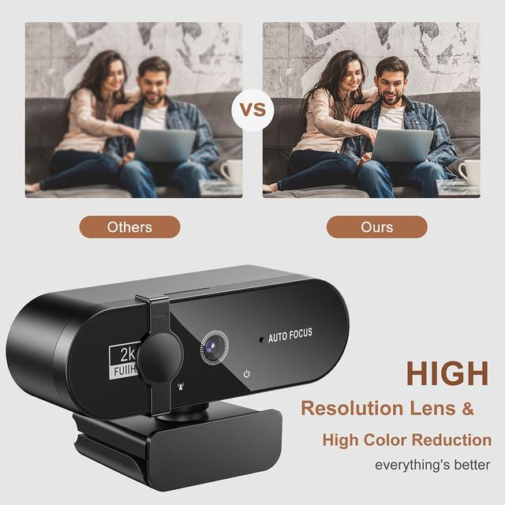
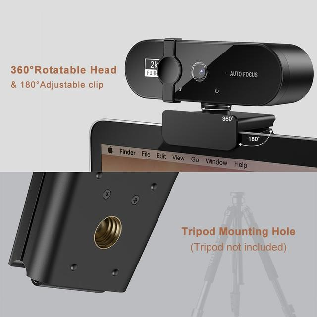
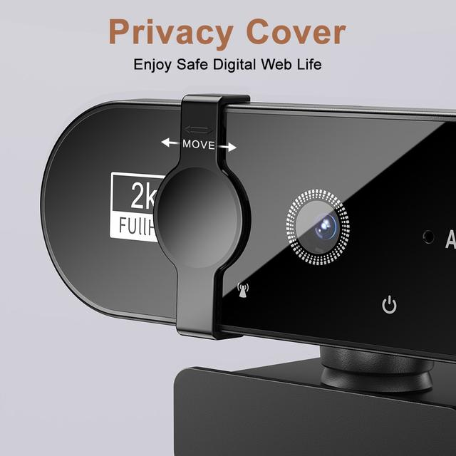
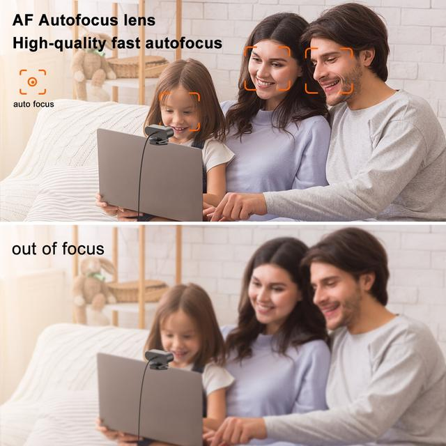
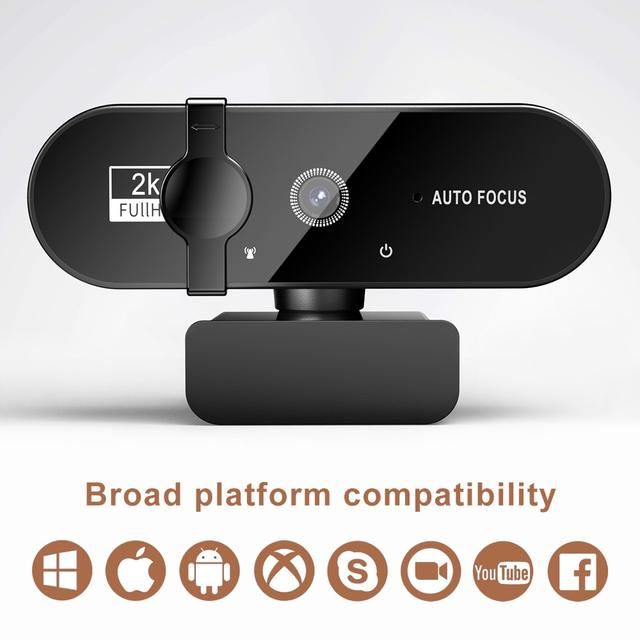
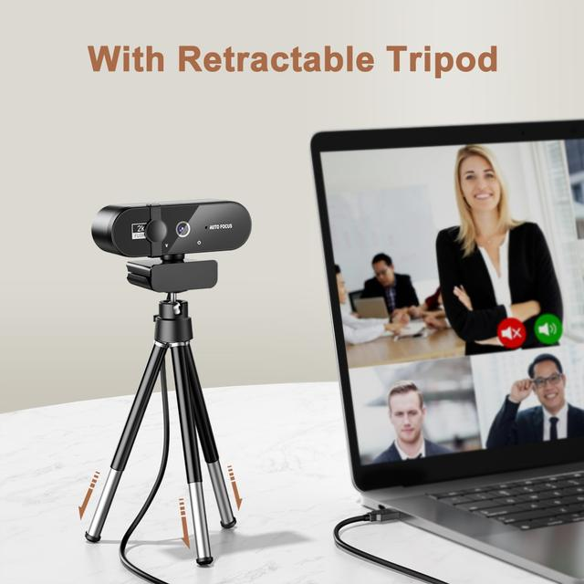
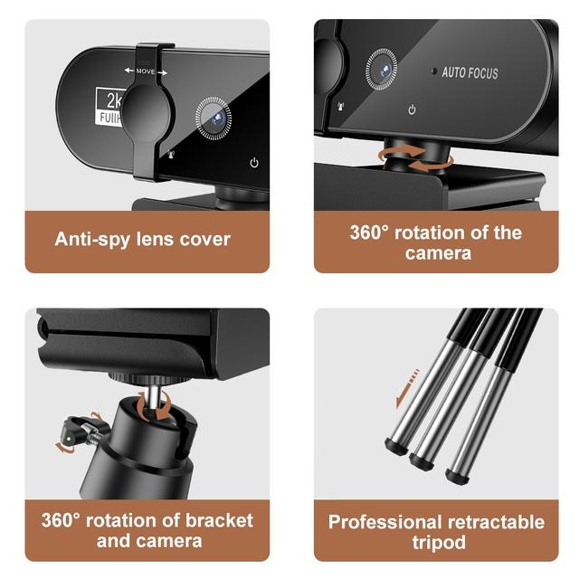
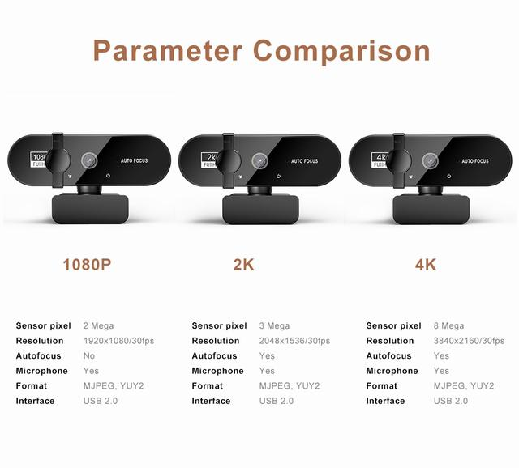

• High Resolution Camera :Capture every detail with the Mairuige 4K webcam's high-resolution camera, offering a maximum resolution of 3840x2160 for stunningly clear video quality.
• Auto Focus Feature :Never worry about blurry videos again as the webcam's auto focus feature ensures all your content is in focus, enhancing the overall visual experience.
• Integrated Microphone :The webcam comes with an integrated microphone, providing high-quality audio to complement your videos, making it ideal for video conferencing or online classes.
• USB Interface :Easy connectivity with the webcam's USB interface, ensuring seamless integration with your PC or laptop for hassle-free usage.
• Compact and Portable :Its compact and portable design makes it easy to carry around, perfect for those who are always on the go.
• Certified Product :Quality assurance with the webcam being FCC certified, guaranteeing its safety and reliability for use.
Video Frame rate : 1080P:30fps,2K 4K:30fps
Output format : MJPG/YUY2
Microphone: Digital microphone
Interface : USB2.0
Cable length :140cm
Support system : Windows XP, Win7,Win8,Win10M,Mac OS ,Vista, Linux








Features4K Full HD Webcam – The streaming camera with 1080P video compression mode to provide excellent quality video streaming on social gaming and media. Perfect for web conferencing, live streaming, video calling & recording.
90 Degree Widescreen – Streaming camera captures high def video at a wide angle of up to 90 degrees, Great for webinars, video conferencing etc.
Noise-Canceling Microphone – Computer webcam with microphone can automatically eliminate background noise and clearly capture voice within 8 meters, this web cam is the best choice for video call.
Easy to Use – No need to download or install complicated driver software, just plug and play.
Best Universal Compatibility – Youlisn webcam can works with Windows 7/8/10, Mac OSX, Linux etc.
Resolution : 2048x1536（2k） 1920x1080（1080p） 3840*2160（4K）
FAQ
Does the video have autofocus when the lights are dim at night?
Yes, the camera has an auto-focus function
Is this camera clear?
Yes, there are three types of cameras, 1080/2K/4K. All three have different pixels. Choose the appropriate product according to your usage scenario.